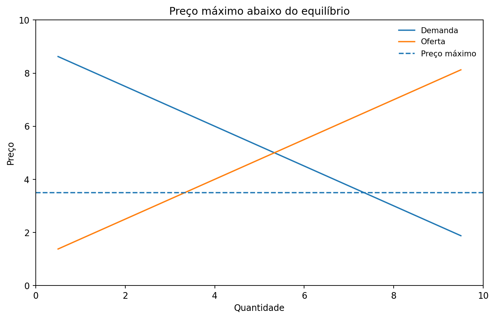
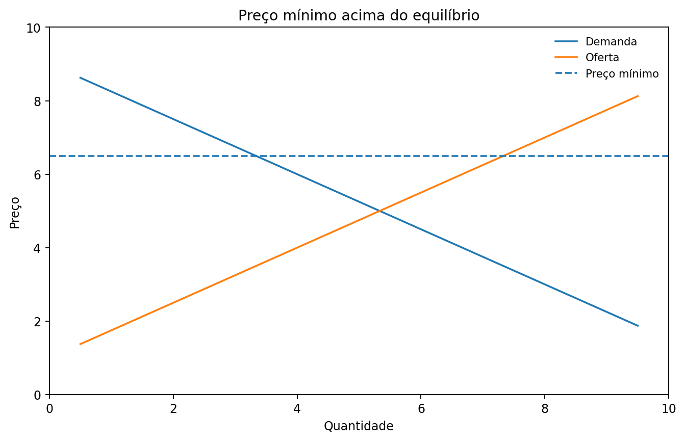
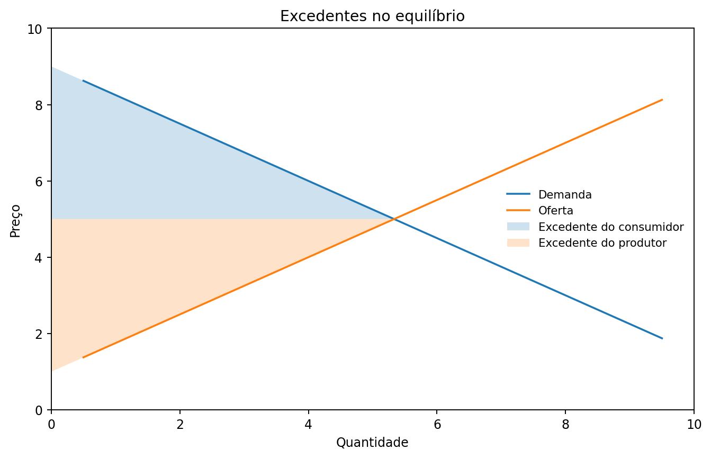

Aula 3 — Políticas governamentais e eficiência dos mercados
1. Políticas governamentais e mercados
4. Preço máximo: interpretação
6. Preço mínimo: interpretação
9. Quem realmente paga o imposto?
10. Elasticidade e incidência tributária
14. Custo e disposição a vender
16. Os dois excedentes no mercado
Ao final desta aula, você deverá ser capaz de:
Até aqui, utilizamos oferta e demanda para compreender como preços e quantidades são determinados.
O capítulo 6 acrescenta uma nova pergunta:
O que acontece quando o governo interfere diretamente nos preços ou introduz impostos?
Duas formas de intervenção são centrais:
A análise continua usando as mesmas curvas de oferta e demanda estudadas na aula anterior.
Governos podem estabelecer limites legais para os preços.
Preço máximo: determina o maior preço permitido.
Preço mínimo: determina o menor preço permitido.
O efeito depende da posição desse limite em relação ao preço de equilíbrio.
Regra central
Um controle de preços só altera o resultado do mercado quando é restritivo.
Um preço máximo restritivo é fixado abaixo do preço de equilíbrio.
Nesse preço:
quantidade demandada > quantidade ofertada
Surge excesso de demanda, isto é, escassez do bem ao preço estabelecido.

Imagine que o preço de equilíbrio seja R$ 100.
Não é restritivo. O mercado já negociaria por R$ 100.
É restritivo.
A um preço menor:
Aplicação do capítulo
Mankiw utiliza o controle de aluguéis para mostrar que os efeitos podem se tornar mais intensos no longo prazo.
Um preço mínimo restritivo é fixado acima do preço de equilíbrio.
Nesse preço:
quantidade ofertada > quantidade demandada
Surge excesso de oferta.

Imagine que o preço de equilíbrio seja R$ 100.
Não é restritivo.
É restritivo.
A um preço maior:
O salário mínimo aparece no capítulo como uma aplicação do preço mínimo ao mercado de trabalho.
Governos utilizam impostos para arrecadar recursos destinados a diferentes atividades públicas.
Para analisar um imposto em um mercado, precisamos observar seus efeitos sobre:
Um imposto cria uma diferença entre o preço pago pelo comprador e o preço recebido pelo vendedor.
A diferença criada pelo imposto pode ser entendida como uma cunha tributária.
Após a introdução do imposto:
Preço pago pelo comprador
é maior que
Preço recebido pelo vendedor
A quantidade negociada também tende a diminuir.
Ponto importante
O imposto altera o resultado do mercado independentemente de a obrigação formal de recolhê-lo ser atribuída ao comprador ou ao vendedor.
A lei pode determinar quem deve recolher o imposto.
Mas isso não determina necessariamente quem suporta economicamente seu custo.
O ônus pode ser dividido entre compradores e vendedores.
Essa divisão é chamada de incidência tributária.
Não confundir
Incidência legal: quem é responsável pelo recolhimento.
Incidência econômica: quem efetivamente suporta a redução de renda ou poder de compra provocada pelo imposto.
A divisão do ônus tributário depende das elasticidades da oferta e da demanda.
A regra fundamental é:
O lado menos elástico do mercado tende a suportar a maior parcela do imposto.
Por quê?
Porque o lado menos elástico possui menor capacidade de alterar seu comportamento diante da mudança de preço.
Isso conecta diretamente o capítulo 6 ao conceito de elasticidade estudado no capítulo 5.
O capítulo 7 acrescenta uma nova dimensão à análise.
Até agora perguntávamos:
Agora perguntaremos também:
Quais benefícios compradores e vendedores obtêm ao participar do mercado?
Para responder, introduzimos os conceitos de excedente do consumidor e excedente do produtor.
A disposição a pagar é o valor máximo que um comprador aceitaria pagar por determinado bem.
Exemplo:
Uma pessoa pagaria no máximo R$ 100 por um produto.
O preço de mercado é R$ 70.
Ela compra o produto e obtém um benefício líquido de:
R$ 100 − R$ 70 = R$ 30
Esse benefício é o excedente do consumidor.
O excedente do consumidor é:
\[ EC = \text{disposição a pagar} - \text{preço pago} \]
Graficamente, corresponde à área:
abaixo da curva de demanda e acima do preço de mercado.
Quando o preço diminui:
Para o vendedor, o custo representa o valor daquilo de que ele precisa abrir mão para produzir determinado bem.
Um vendedor aceita produzir quando o valor recebido compensa esse custo.
Exemplo:
Custo de produção = R$ 40
Preço recebido = R$ 70
Benefício líquido do produtor:
R$ 70 − R$ 40 = R$ 30
Esse benefício é o excedente do produtor.
O excedente do produtor é:
\[ EP = \text{preço recebido} - \text{custo} \]
Graficamente, corresponde à área:
acima da curva de oferta e abaixo do preço de mercado.
Quando o preço aumenta, o excedente do produtor tende a aumentar, mantidas as demais condições.
No equilíbrio, podemos representar simultaneamente os benefícios de consumidores e produtores.

Acima do preço e abaixo da demanda: excedente do consumidor.
Abaixo do preço e acima da oferta: excedente do produtor.
Podemos reunir os dois lados do mercado:
\[ \text{Excedente total} = \text{Excedente do consumidor} + \text{Excedente do produtor} \]
Também podemos escrever:
\[ \text{Excedente total} = \text{valor para os compradores} - \text{custo para os vendedores} \]
O excedente total é uma medida dos ganhos obtidos com as trocas realizadas no mercado.
No modelo competitivo apresentado por Mankiw, o equilíbrio de mercado maximiza o excedente total.
Isso ocorre porque:
Eficiência
Uma alocação é eficiente quando maximiza o excedente total obtido pelos participantes do mercado.
Eficiência não responde a todas as perguntas sobre o funcionamento de uma economia.
Refere-se ao tamanho do excedente total.
Refere-se à maneira como o bem-estar é distribuído entre os participantes.
Um resultado pode ser eficiente sem que todos considerem sua distribuição justa.
Duas perguntas diferentes
Quanto o mercado gera de excedente?
e
Como esse excedente é distribuído?
não são a mesma questão.
Oferta e demanda + intervenção governamental
Preço máximo → pode gerar excesso de demanda.
Preço mínimo → pode gerar excesso de oferta.
Imposto → cria uma cunha entre o preço pago e o recebido.
Elasticidade → ajuda a determinar quem suporta o imposto.
Mercados + bem-estar
Disposição a pagar → excedente do consumidor.
Custo → excedente do produtor.
EC + EP → excedente total.
Equilíbrio competitivo → maximização do excedente total no modelo estudado.
Ideia central da Aula 3
Oferta e demanda permitem analisar não apenas preços e quantidades, mas também os efeitos de políticas governamentais e os ganhos obtidos por compradores e vendedores nas trocas.
MANKIW, N. Gregory. Principles of Economics. 8. ed. Cengage Learning, 2018. Capítulos 6 e 7.